Play
- Software
Erste Hilfe auf dem Handy
Version: i1.0
Release: 2008-12-24
Copyright: Kai Kajus Noack
Lizenz: Creative Commons  Dieses Programm soll Informationen zur Ersten Hilfe geben. Es stellt jedoch in keiner Weise einen Ersatz für einen Erste-Hilfe-Kurs dar, sondern dient der Auffrischung des bereits erworbenen Wissens.
Dieses Programm soll Informationen zur Ersten Hilfe geben. Es stellt jedoch in keiner Weise einen Ersatz für einen Erste-Hilfe-Kurs dar, sondern dient der Auffrischung des bereits erworbenen Wissens.
Illustrationen © Med4Teens
Interface © iUI Library
- Haftungsausschluss
Bitte beachten Sie, dass ich keine Verantwortung für Konsequenzen, die aus der Nutzung entstehen, übernehme.
JEGLICHE HAFTUNG IST AUSGESCHLOSSEN!
VERWENDUNG AUF EIGENE GEFAHR!
In allen Notfällen suchen Sie bitte sofort professionelle Hilfe.
- Entwicklung des Projekts
Das Programm soll vielsprachig werden. Freiwillige Übersetzer gesucht!!
Weitere Informationen erhaltet ihr im Internet unter www.firstai.de oder schreibt eine E-Mail an:
Rette einen Menschen und du rettest die ganze Welt.
Play
- Leisten Sie immer Erste Hilfe. Sie können keine Fehler machen.
- Achten Sie immer auf Ihre eigene Sicherheit.
- Machen Sie sich ein Bild von der Situation + Sichern Sie die Unfallstelle.
- Notruf + Sofortmaßnahmen!
- Bei mehreren Verletzten hat der am stärksten bedrohte Vorrang.
- Beruhigen Sie den Betroffenen. Und bleiben Sie selbst ruhig!
- Lagern Sie den Betroffenen falls möglich bequem. Grundsätzlich nie Alkohol, Nikotin oder Medikamente verabreichen.
 Play
Play
- Notruf absetzen.
- Beruhigen des Betroffenen und bequem hinsetzen.
- Allergie-auslösenden Stoff (z. B. Insektenstachel) vorsichtig entfernen.
- Betroffene Hautstelle kühlen (feuchter Umschlag, Eis). 
- Falls Betroffener ein Gegenmittel hat, sollte er dieses nutzen.
- Kontrolle des Zustands bis Notarzt eintrifft.
- Bei eintretender Bewusstlosigkeit oder Atemnot entsprechende Maßnahmen ergreifen!

Play
Abgetrennter Körperteil kann wieder angenäht werden. Ziel: Amputat bis zum Eintreffen im Krankenhaus kühlen.
- Betroffenen beruhigen, hinlegen und zudecken.
- Blutung stoppen, siehe 'Blutung (schwer)' und 'Schock'.
- Abgetrennten Körperteil in ein sauberes trockenes Tuch wickeln und in eine wasserdichte Plastiktüte legen.
- Diese Plastiktüte verschließen und in eine zweite Plastiktüte legen, die kühles Wasser/Eis enthält.
- Keinen Alkohol, Zigaretten oder Essen geben (falls im Krankenhaus mit Narkose operiert wird).
- Das Amputat nicht einfrieren (nur kühlen).
- Notarzt rufen oder selbst zum Krankenhaus fahren.
 Play
Play
Achtung, hohe Infektionsgefahr. Folgen wie Eiter, Tetanus, Tollwut.
- Wunde sofort mit heißem Seifenwasser auswaschen. 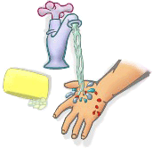
- Anschließend Wunddesinfektion auftragen.
- Bei starker Blutung den Oberkörper erhöht lagern.
- Keimfreien Verband anlegen.

- Krankenhaus aufsuchen oder Notruf absetzen.
Play
Schmerzen im Rücken, gefühllose Arme und Beine.
- Verletzten auf keinen Fall bewegen! 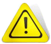
- Kopf so halten, dass Betroffener stabil liegt. 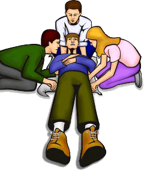
- Verletzten nur mittels seitlicher Polsterung stabilisieren.
- Betroffenen beruhigen.
- Notruf absetzen, Hinweis auf Rückenverletzung.
Play
Spritzendes, in Stößen austretendes Blut. Gefahr: Schock durch Blutverlust, Infektionen, Tod. Ziel: Stoppen der Blutung.
- Kleidung entfernen (notfalls aufschneiden), Wunde freilegen.
- Binde oder notfalls Kleidungsstück mit Druck um Wunde wickeln. 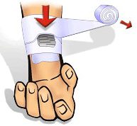
- Für mind. 10 min Druck auf Wunde ausüben.
- Falls Binde mit Blut durchnässt, nicht die alte Binde entfernen! Eine andere Binde/Kleidungsstück darüber binden.
- Verletztes Glied (sofern nicht gebrochen) über Höhe des Herzens lagern, damit sich Blutung verlangsamt. Wenn möglich Betroffenen hinlegen.
- Falls Blutung nicht stoppt, Druck auf Wunde beibehalten und zusätzlich Druckpunkte über der Wunde setzen: Bei Blutung am Unterarm den Oberarm abdrücken (Ader auf Arm-Innenseite mittig zwischen Ellbogen und Achselhöhle, mit Fingern abdrücken). Bei Blutung des Beins, Druckpunkt in Leiste setzen (Ader in Leistenbeuge, wo Arterie über Beckenknochen verläuft, mit Handballen abdrücken).
 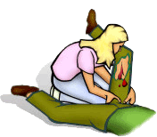
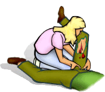
- Sofort Notarzt anfordern.
- Sobald Blutung unter Kontrolle: Schockbekämpfung einleiten. 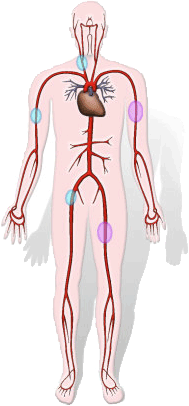
Play
Kopfschmerz, Übelkeit, Erbrechen. Sehstörung. Bewusstlosigkeit kann eintreten.
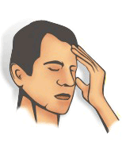
- Betroffenen hinlegen.
- Notruf absetzen.
Bei Blutung am Kopf:
- Betroffenen hinlegen, Kopf erhöht lagern (Kissen).

- Wundversorgung durchführen (Kopf-Verband anlegen).
- Notruf absetzen.
Play
Gefleckte weiße rote Stellen, Blasenbildung. Flüssigkeitsaustritt aus Haut. Tiefe Gewebeschädigung. Starke Schmerzen oder keine Schmerzen (aufgrund verbrannter Nerven).
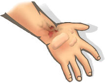
- Kleidung soweit wie möglich entfernen.
- Mit kaltem Wasser (ca. 15°C) bis zu 10 min kühlen, bis Schmerzlinderung eintritt.

- Falls Verbrennung großflächig, nur mit feuchten Tüchern kühlen.
- Notruf absetzen.
- Nach Kühlung die Wundversorgung durchführen. Sterile, trockene Wundauflage benutzen. Keine Flüssigkeiten aufbringen (keine Cremes, Öle, Salben etc.). Blasen nicht aufstechen.
- Atmung und Bewusstsein des Betroffenen kontrollieren, bis Notarzt eintrifft.
Play
- Atemgeräusche prüfen.
- Atmung am Oberbauch feststellen (Hand auflegen).

- Atmung an Nase/Mund fühlbar.
Play
- Notarzt rufen, auf Ätz-Substanz hinweisen.
- Auge sofort mit viel Wasser spülen. Gesundes Auge während Spülung abdecken.
- Wasserstrahl vom inneren Augenwinkel zum äußeren Augenwinkel. Ca. 20 min reinigen.

- Beide Augen des Betroffenen schließen und mit angefeuchtetem Tuch verbinden. 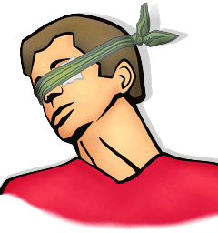
- Zustand kontrollieren, bis Notarzt eintrifft.
Play
Zerstörung von Gewebe.

- Eigenschutz beachten!
- Zügig handeln und verätzte Stellen abspülen (bei Verätzung der Augen mind. 20 min mit klarem Wasser spülen). Wasserstrahl vom inneren Augenwinkel zum äußeren Augenwinkel.
- Notruf absetzen.
- Bei Verätzung des Verdauungsweges: Vermehrt Flüssigkeit trinken.
- Kein Erbrechen auslösen!
Play
- Grifftechnik: Arm des Verletzten vor dessen Brust, hinter den Verletzten stellen.
- Mit beiden Händen den angewinkelten Arm des Verletzten durch dessen Achseln greifen.
- Person in Sicherheit bringen.


Play
Nahrungsmittel-Unverträglichkeit, Darm-Entzündung oder Erkrankung. Stuhlgang wässrig, schleimig oder blutig.
- Gefahr für Kreislauf aufgrund Flüssigkeits- und Salz-Verlustes!
- Flüssigkeit zuführen (Tee, Wasser).
- Bei starken Beschwerden Arzt aufsuchen oder Notruf absetzen.
Play
- Notruf absetzen. Personen in der Nähe um Hilfe bitten.

- Aus Wasser retten!
 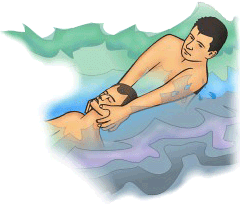
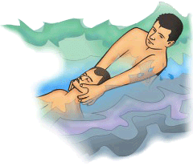
- Wenn Atmung vorhanden: Stabile Seitenlage. Betroffenen warm halten (Decke). Zustand kontrollieren, bis der Notarzt eintrifft.
- Bei Atemstillstand sofort mit Wiederbelebung beginnen! (Ausfließenlassen von Wasser aus Lungen ist nutzlos.)
Play
- Wählen Sie mit dem nächst-verfügbaren Telefon 112. Immer möglich und kostenlos! Zögern Sie nie, den Notarzt zu rufen!
- Am Telefon Folgendes durchgeben:
- Wo (Unfallort).
- Was ist passiert.
- Wie viele Verletzte.
- Welche Verletzungen.
Danach auf Rückfragen warten.
Play
Starrer Körper, geballte Fäuste, gepresster Kiefer, Zucken in Beinen oder Gesicht. Rollende Augen. Speichelfluss. Bewusstlosigkeit möglich.
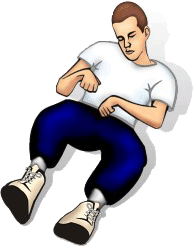
- Betroffenen nicht halten oder in Bewegung einschränken.
- Betroffenen auf weiche Unterlage (Kissen) legen, Objekte in direkter Nähe entfernen, somit Selbstverletzungen vorbeugen.
- Beruhigend zum Betroffenen reden. Kleidung lockern, für Atemfreiheit sorgen.
- Falls Betroffener erbricht, Kopf zur Seite drehen, damit Erbrochenes abfließen kann.
- Atemwege freihalten. Gefahr, dass Zunge verschluckt wird.
- Stabile Seitenlage + Notruf absetzen. Weiterhin Zustand des Betroffenen kontrollieren.
- Andere Leute auf Distanz halten.
Play
- Fremdkörper im Auge belassen, nicht entfernen.
- Augen nicht bewegen, um weitere Verletzungen zu vermeiden. Auge nicht berühren.
- Bei Augen-Blutung mit Kompresse oder Verbandtuch bedecken.
- Auge mit kalter Auflage kühlen (verringert Schwellung, Blutung stoppt schneller).
- Notruf absetzen oder selbst zum Krankenhaus fahren.
Play
Anzeichen: Unnatürliche Lage und Beweglichkeit. Deformierung. Schmerzhafte Bewegung, berührungsempfindlich.
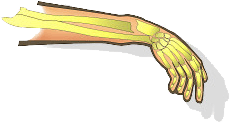
- Bewegungen vermeiden!
- Notruf absetzen.
- Bruch ruhig stellen, d.h. Umpolstern mit dichtem Material. Position des gebrochenen Knochens beibehalten. 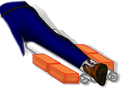
- Bei offenem Bruch die Wunde keimfrei abdecken.

Play
Blässe, Schwellen. Gefahr für Blutzufuhr.
- Warmen Bereich aufsuchen.
- Kälte beseitigen. Nasse Kleidung entfernen, abtrocknen.
- Aufwärmen mit lauwarmem Wasser und Körperwärme des Helfers.
- Warmes Getränk (Tee) geben. Keinen Alkohol! 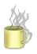
Play
Kalte harte Haut, grau-weiß, Blasenbildung, Gewebe stirbt ab. Gefahr für Blutzufuhr!

- Warmen Bereich aufsuchen.
- Wunden versorgen/abdecken.
- Zuckerhaltiges Getränk verabreichen.
- Nicht warmreiben!
- Notruf absetzen.
Play
Schwere mehr als 5 min anhaltende Schmerzen + Druck im Brustkorb, besonders in Arme/Schultern ausstrahlend. Angstgefühl, Blässe, kalter Schweiß. Eventuell Übelkeit, Kurzatmigkeit.
 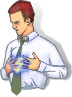
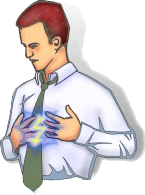
- Notruf absetzen! Hinweis auf vermuteten Herzinfarkt.
- Oberkörper erhöht lagern. Enge Kleidung lockern. Keine Medikamente oder Getränke geben.
- Beruhigend auf Betroffenen einreden.
- Bewusstsein und Atmung kontrollieren.
- Dem Betroffenen Aspirin verabreichen, falls verfügbar.
- Bei Bewusstlosigkeit die Wiederbelebung einleiten.
Play
Blutzuckerspiegel unter Mindestwert (aufgrund Überdosierung von Insulin oder ungenügender Nahrungsaufnahme).
Symptome: Blässe, Nervosität, Hunger, Zittern, Schweiß.
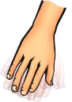
- Zuerst klären, ob der Betroffene Diabetiker ist (siehe Diabetiker-Ausweis).
- Notruf absetzen.
- Dem Betroffenen gezuckerte Getränke und Traubenzucker geben (sofern keine Schluckschwierigkeiten).

- Bei Bewusstlosigkeit und vorhandener Atmung: Stabile Seitenlage einnehmen und Atmung kontrollieren. Falls Atemstillstand eintritt, den Betroffenen beatmen.
- Wenn Atmung vorhanden, dem Bewusstlosen ein Stück Zucker in die Backentasche legen und von außen gegendrücken.
Play
Durst, Schwäche, Desorientiertheit, Bewusstseinsstörung, starker Schweiß, heiße Haut.
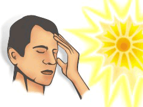
- Notruf absetzen.
- Kühlen, schattigen Platz aufsuchen (Raum mit Klimaanlage sehr geeignet).
- Betroffenen hinlegen, Beine hochlagern. Kleidung lockern. 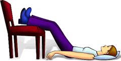
- Haut mit Wasser kühlen oder kalte Handtücher auflegen.
- Viel Wasser oder Säfte trinken.
Play
Kältezittern, Schläfrigkeit, Erschöpfung, bis hin zur Bewusstlosigkeit. Kalte, blasse Haut. Langsamer Puls, schwacher Herzschlag.

- Warmen Bereich aufsuchen.
- Notruf absetzen.
- Kälteeinwirkung beenden. Körpertemperatur erhöhen (Decke und Körper-zu-Körper-Kontakt).
- Nasse Kleidung entfernen und trockene warme Kleidung anziehen. In Decken packen. Kopf bedecken.
- Heißen Tee, Brühe oder heißes Wasser zu trinken geben. Keinen Alkohol! Betroffenen wachhalten.

- Zustand bis zum Eintreffen des Notarztes kontrollieren. Bei Verlust des Bewusstseins Wiederbelebung einleiten.
- A - Bewusstlosigkeit mit Atmung
- B - Bewusstlosigkeit ohne Atmung
Play
Eigenschutz beachten! Gefahr: Ertrinken, Unterkühlung.
- Rettung erfolgt via Leiter, Brett, Stange. Gewicht muss großflächig verteilt werden.
- Andere Personen um Mithilfe auffordern. Notruf absetzen lassen.
- Auf Bauch (möglichst angeseilt) mit Hilfsmittel vorsichtig zur Einbruchstelle robben.

- Verunglücktem auf Distanz das Hilfsmittel reichen (nicht die Hand!) und herausziehen.
- Rückwärts bis zum Ufer zurückrobben.
- Erste-Hilfe-Maßnahmen.
- Eigenrettung möglich: Bei festem Eis Gewicht auf Eis verteilen und sich selbst herausziehen. Flach auf Bauch zum Ufer zurückrobben. Bei brüchigem Eis versuchen Eis bis zum Ufer Stück für Stück abzubrechen.
Play
Schwellungen, Hautausschlag, brennendes Gefühl, Schwäche, Atemnot, Kreislaufprobleme, Herzrasen.
- Stachel vorsichtig entfernen (mit Pinzette). Nicht auf Stachel drücken, könnte noch mehr Gift injizieren.
- Kühlung der betroffenen Stelle (kalte Kompresse).
- Betroffene Stelle niedriger als Herz-Höhe halten, damit Gift langsamer zirkuliert.
- Bei Stich im Mund-Rachen-Raum: Eis lutschen lassen, kalte Umschläge um Hals.
- Bei ernsten Beschwerden Notruf absetzen.
Play
- Betroffenen in Rückenlage, Beine ausstrecken. Daneben knien.
- Nahen Arm im rechten Winkel zum Körper positionieren.
- Fernen Arm über Brust des Verletzten ziehen und Handrücken auf Wange platzieren.

- Entferntes Knie fassen, zu sich ziehen und auf Boden legen. Bein etwa im rechten Winkel positionieren. Hand des Betroffenen bleibt auf dessen Wange.
- Sicherstellen, dass Atemwege frei sind.
- Kopf in Nacken beugen, Kinn anheben. Mund leicht öffnen. Atmung kontrollieren. 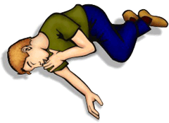
- Bewusstsein und Atmung kontrollieren bis Notarzt eintrifft.
- Stabile Seitenlage (Baby):

Play
- Eigenen Pkw 50-100 m hinter Unfallstelle halten (falls Autobahn oder Landstraße). Danach Warnblinker anschalten und Warnweste anziehen.
- Warndreieck vor Unfallstelle aufstellen. Achtung: Bei einem Unfall in der Kurve, Warndreieck vor der Kurve platzieren!

- Andere Personen um Mithilfe auffordern.
- Tür des Unfall-Pkws öffnen (falls verklemmt, mittels Wagenheber aufstemmen). Zündung ausschalten.
- Unfallopfer bergen: Abschnallen, Sitz nach hinten schieben. Verletzten mit Rettungsgriff aus Wagen befreien.
- Notruf absetzen.
- Erste-Hilfe-Maßnahmen.
Play
Kreislauf-Störung durch mangelhafte Sauerstoffversorgung im Körper.
Ursache: Verlust von Flüssigkeit, reduzierte Blutmenge.
Symptome: Blässe, kalte Haut, kalter Schweiß, Unruhe.
- Schockursache beseitigen (z.B. Flüssigkeitsverlust stoppen, Wunde abbinden)!
- Betroffenen auf Decke legen, Beine hoch lagern. Beruhigen.
- Notruf absetzen.
- Bei Atem- und Herz-Kreislauf-Störungen Wiederbelebung einleiten.
Play
Leichte Blutungen aus Nase, Mund oder Ohr. Oft offene Wunde am Schädel.
- Atemwege freihalten.
- Bei Bewusstsein: Verletzten nach vorne gebeugt hinsetzen. Weitere Bewegungen vermeiden!
- Bei Bewusstlosigkeit: Stabile Seitenlage (keinen Druck auf Kopfwunde).
- Notruf absetzen.
- Kopfverband anlegen.
- Bei Atem- und Herz-Kreislauf-Störungen Wiederbelebung einleiten.
 Play
Play
Punktförmige Wunde in Stecknadelgröße, heftige Schmerzen, Schwellung, blaurote Verfärbung. Kreislaufstörung, Schockgefahr.
- Verletzten Körperteil ruhigstellen
- Kalte Umschläge auf Bissstelle.
- Schockbekämpfung.
- Notruf absetzen.
Play
- Signal: 3x kurz, 3x lang, 3x kurz.
- Optisch (Blitzlicht, Taschenlampe) oder Akustisch (Signalpfeife, Klopfen).
Play
Schmerzen, Schwellung (Bluterguss), Funktionsverlust, Verformung des Gliedes.
- Ruhigstellung des Gliedes ausschließlich in der für Betroffenen angenehmsten Position.
- Kühlen (mit Eisbeutel).
- Falls möglich Glied hoch lagern.
- Krankenhaus aufsuchen oder Notruf absetzen.
Play
Plötzliches Lähmungs- oder Taubheitsgefühl (Gesicht, Arm, Bein), gestörtes Sprachverständnis, Sehstörung, Bewusstseinstrübung, starke Kopfschmerzen. Probleme beim Atmen und Schlucken, Kontrollverlust über Blase und Darm.
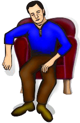
- Notruf absetzen!
- Enge Kleidung lockern, keine Medikamente oder Getränke geben.
- Betroffenen bequem hinsetzen oder hinlegen. Beruhigen!
- Bewusstsein und Atmung kontrollieren.
- Bei Atem- und Herz-Kreislauf-Störungen Wiederbelebung einleiten.
Play
Unzureichende Sauerstoffversorgung. Luftröhre verschlossen. Gefahr: Atemstillstand.
Symptome: Pfeifendes Atemgeräusch, Hustenreiz, Atemnot, Hautverfärbung.

- Sofort handeln! Betroffenen kräftig Husten lassen.
- Mit flacher Hand auf Rücken zwischen Schulterblättern kräftig klopfen (Babys dabei auf Unterarm legen, Kopf nach unten halten). 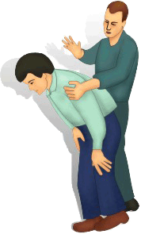 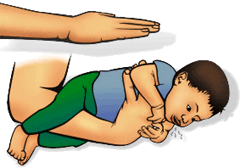
- Wenn ohne Erfolg: Hinter Person stellen, Arme um Taille legen, leicht nach vorne beugen.
- Hand zur Faust ballen, auf Magen-Höhe des Betroffenen positionieren und mit anderer Hand umfassen. 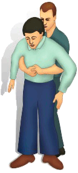
- Beide Hände in Umklammerung mit hartem Stoß in Richtung Magen nach oben/innen ziehen (als ob Sie die Person hochheben wollen).
- Bis zu 5-mal wiederholen! Luftwege sollten vom Objekt befreit sein.
- Notruf absetzen.
- Falls Maßnahme nicht erfolgreich, trotzdem fortsetzen, bis Notarzt eintrifft.
Play
- Betroffenen aus direkter Sonneneinstrahlung nehmen. Weitere Sonne meiden.
- Viel Wasser trinken, um Dehydration entgegenzuwirken.
- Bei ernsthaftem Sonnenbrand (Blasenbildung, Rötung, Schmerzen) unbedingt Arzt aufsuchen.
- Leichte Hautrötungen mit feuchten Umschlägen kühlen. After-Sun-Lotion oder Gel auftragen.
Play
Heißer roter Kopf, kühle Haut, Übelkeit, Kopfschmerz, Schwindelgefühl. Ursache: Reizung der Hirnhaut.
- Kühlen Ort aufsuchen (Schatten) und Oberkörper des Betroffenen erhöht lagern.
- Mit nassen Tüchern Kopf kühlen.
- Notruf absetzen, Atmung weiterhin kontrollieren.
- Bei Bewusstsein: Ggf. kühles Getränk geben.
- Bei Atemstillstand mit Beatmung beginnen:
- Weiter mit Beatmung!
Play
Folge von Übelkeit. Magen befreit sich. Ursachen: Infektion, Vergiftung, Geschwür, Medikamente, falsche Nahrung, Schwangerschaft.

- Gefahr für Kreislauf aufgrund Flüssigkeits- und Salz-Verlustes!
- Flüssigkeit zuführen (Tee, Wasser).
- Bei starken Beschwerden, blutigem oder anhaltendem Erbrechen Arzt aufsuchen.
Warum spenden?
Denkst du, das Projekt ist eine gute Idee? Dann spende bitte! Denn das Projekt überlebt nur durch Spenden.
Spende online via PayPal oder überweise einen Betrag auf das Konto: Kai Kajus Noack, Konto-Nr. 5400736393, BLZ 70220300, BWM Bank
Jede Unterstützung zählt!
Ein kleiner Schritt für einen Menschen, aber ein großer Schritt für die Menschheit.
Lizenz
Creative Commons BY-NC-ND 3.0
Du darfst das Werk zu den folgenden Bedingungen vervielfältigen, verbreiten und öffentlich zugänglich machen:
- Namensnennung
Du musst den Namen des Rechteinhabers Kai Kajus Noack nennen und einen Link auf die Webseite www.firstai.de angeben (wodurch aber nicht der Eindruck entstehen darf, du oder die Nutzung des Werkes durch dich würden entlohnt).
- Keine kommerzielle Nutzung
Dieses Werk darf nicht für kommerzielle Zwecke verwendet werden.
- Keine Bearbeitung
Dieses Werk darf nicht bearbeitet oder in anderer Weise verändert werden.
- Im Falle einer Verbreitung musst du anderen die Lizenzbedingungen, unter welche dieses Werk fällt, mitteilen. Einfach den Link auf http://creativecommons.org/licenses/by-nc-nd/3.0/de/ einbinden.
- Jede der vorgenannten Bedingungen kann aufgehoben werden, sofern du dazu die Einwilligung des Rechteinhabers erhältst.
- Diese Lizenz lässt die Urheberpersönlichkeitsrechte unberührt.
- Feuerwehr (lokale Nummern)
- Notarzt (lokale Nummern)
- Polizei (lokale Nummern)
- Feuerwehr (18)
- Notarzt (lokale Nummern)
- Polizei (17)
- Feuerwehr (kein System)
- Notarzt (kein System)
- Polizei (kein System)
- Feuerwehr (lokale Nummern)
- Notarzt (lokale Nummern)
- Polizei (lokale Nummern)
- Feuerwehr (lokale Nummern)
- Notarzt (lokale Nummern)
- Polizei (lokale Nummern)
- Feuerwehr (lokale Nummern)
- Notarzt (lokale Nummern)
- Polizei (lokale Nummern)
- Feuerwehr (18)
- Notarzt (lokale Nummern)
- Polizei (17)
- Feuerwehr (nur Radiotelefon)
- Notarzt (nur Radiotelefon)
- Polizei (nur Radiotelefon)
- Feuerwehr (lokale Nummern)
- Notarzt (lokale Nummern)
- Polizei (lokale Nummern)
- Feuerwehr (lokale Nummern)
- Notarzt (lokale Nummern)
- Polizei (lokale Nummern)
- Feuerwehr (118)
- Notarzt (lokale Nummern)
- Polizei (117)
- Feuerwehr (lokale Nummern)
- Notarzt (lokale Nummern)
- Polizei (112)
- Feuerwehr (--)
- Notarzt (--)
- Polizei (--)
- Feuerwehr (--)
- Notarzt (--)
- Polizei (--)
- Feuerwehr (lokale Nummern)
- Notarzt (8891515)
- Polizei (lokale Nummern)
- Feuerwehr (lokale Nummern)
- Notarzt (lokale Nummern)
- Polizei (lokale Nummern)
- Feuerwehr (999)
- Notarzt (lokale Nummern)
- Polizei (999)
- Feuerwehr (18)
- Notarzt (lokale Nummern)
- Polizei (17)
- Feuerwehr (--)
- Notarzt (112)
- Polizei (--)
- Feuerwehr (kein System)
- Notarzt (kein System)
- Polizei (kein System)
- Feuerwehr (lokale Nummern)
- Notarzt (03)
- Polizei (lokale Nummern)
- Feuerwehr (lokale Nummern)
- Notarzt (lokale Nummern)
- Polizei (lokale Nummern)
- Feuerwehr (lokale Nummern)
- Notarzt (03)
- Polizei (02)
- Feuerwehr (lokale Nummern)
- Notarzt (994)
- Polizei (lokale Nummern)
- Feuerwehr (lokale Nummern)
- Notarzt (lokale Nummern)
- Polizei (lokale Nummern)
- Feuerwehr (lokale Nummern)
- Notarzt (lokale Nummern)
- Polizei (lokale Nummern)
- Feuerwehr (110)
- Notarzt (lokale Nummern)
- Polizei (000)
- Feuerwehr (lokale Nummern)
- Notarzt (lokale Nummern)
- Polizei (lokale Nummern)
- Feuerwehr (lokale Nummern)
- Notarzt (118)
- Polizei (114)


 Gefahr: Bewusstlosigkeit, Atemstillstand.
Gefahr: Bewusstlosigkeit, Atemstillstand.